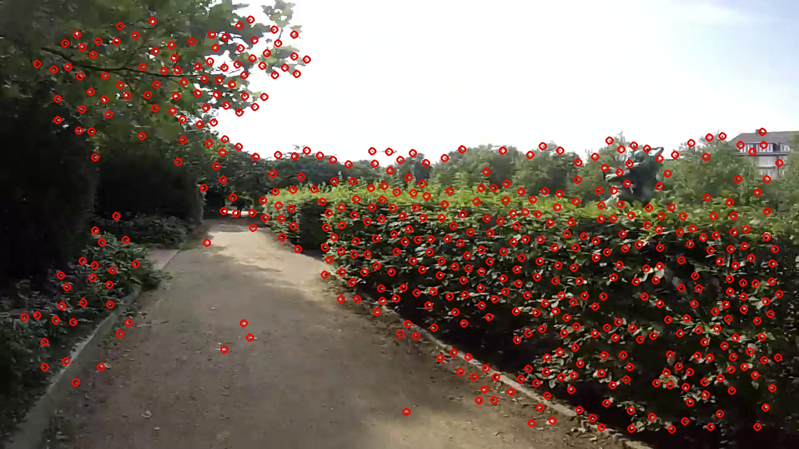
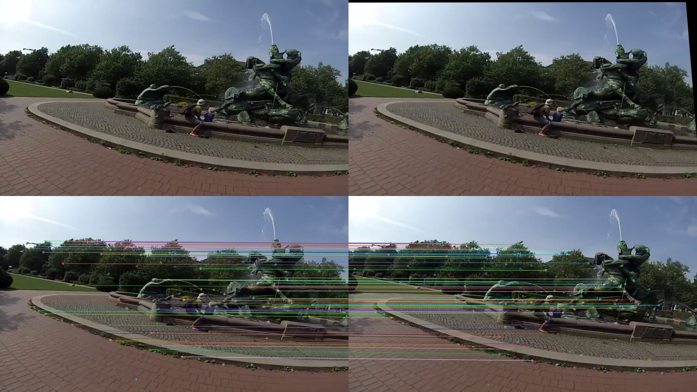
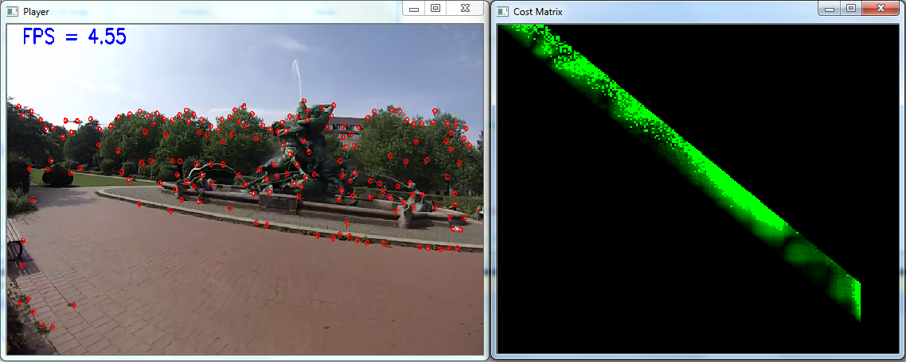
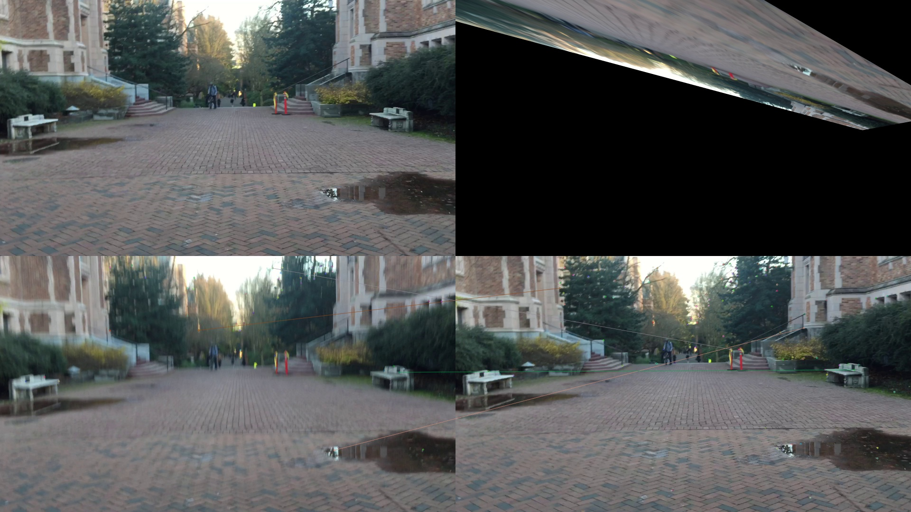
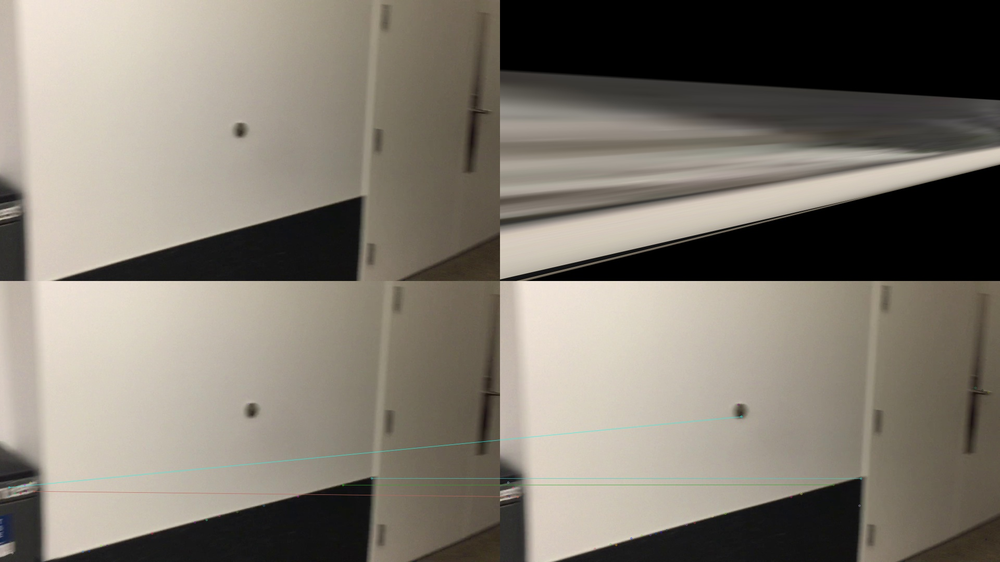

Today, TBs of videos are been uploaded to websites such as YouTube and Facebook, while users have very limited time to watch them. One way to solve this problem is to generate "speed up" videos, hence users can get a sense of the video in short time. This is called "timelapse" video. The idea is to pick up 1 frame in a long time interval, and use these frames to generate the output video. An impressive result could be obtained if a stationary camera is used when capturing the video.
Here is a good timelapse video which captures the beauty of Iceland.
When a video is shot with a stationary camera, naive frame skipping is quite effective; however, if there are camera motions, the speed-up process would cause heavy jumbles. Unfortunately, camera motions are very common in most videos dirtributed in the world, which are usually taken with hand-held devices like smartphones.
“Hyperlapse” videos aim to solve the problem by smoothing the motion of the camera. It performs camera motion smoothing in addition to the speed-up process. Our goal is to help people create an effective and robust hyperlapse video.
Hardware-based method and software-based method are the two main approaches to create hyperlapse videos. We will briefly describe these methods as follows:
- Hardware-based Method: Hardware-based method utilize onboard gyros to detect camera motions, and stabilize the video by offsetting detected motions. Instagram Hyperlapse app[1] use this approach and get quite successful result. But, the major problem of the approach is it only works well in the devices equipped with specified hardware. Also, limited to the hardware constraint, the method cannot by applied to the existing videos.
- Software-based Method: Software-based method usually detects corresponding features between frames, and uses them to recover frame-to-frame camera motions. These motions would be further stablized in the resulting hyperapse video. The most sophisticated and successful work is that of Kopf et al.[2], which applies structure-from-motion (SfM) to reconstruct 3D geometry of video, and re-render the scene based on reconstructed 3D information. While the method works well, it is extremely computational inefficient and is far away from real-time computation
In 2015, Joshi et al.[3] present an algorithm to solve the problem effectively. The idea is to optimize camera motion smoothing and speed-up jointly. By allowing small violations of the target speedup rate, the algorithm tends to select frames which lead to a smoother output. It can run in nearly real-time and handle significantly camera motion than existing real-time methods. Therefore, the algorithm is what we will implement in the final project.
The key idea of Joshi’s work is to pick a set of frames that are close to the target speed but also can be aligned well and thus stabilized more easily in the final hyperlapse video. In order to meet the requirement, an appropriate cost metric and optimization method need to be designed carefully. As illustrated in the following figure, the Joshi’s method consists of three main stages:
-
Frame-matching: In the stage, we want to determine if the frames can be aligned well and have significant overlap regions. The criteria is important to select “good” frames to be stabilized in the later stage.
In order to get the information, we must determine homography between two frames, and estimate overlap regions based on determined homography. We use Harris corner detector[4] to detect key points in each frame, and extract BRIEF descriptor[5] for each key point. RANSAC[6] is performed to find correct key-point matching pairs between frames. Finally, the homography[7] is determined based on these matching pairs. Figure 2 is an example of detection result of Harris corner detectorFigure 3 shows the correct matched pairs after RANSAC process and warped frame based on estimated homography.Figure 2: an example of Harris corner detectionAfter determining homographies, two cost functions are defined in order to get good frame-to-frame transition. The first term is an alignment cost:Figure 3: (Top Row) Left: frame matched with right frame; Right: warpped frame based on estimated homography
(Bottom Row) correct mathced key-point pairs after RANSAC process\[C_{r}(i,j) = \frac{1}{n} \displaystyle\sum_{p=1}^{n} \|(x_{p}, y_{p})_{i}^{T} - T(i,j)(x_{p}, y_{p})_{i}^{T}\|_{2}\]
where $(x_{p}, y_{p)}$ are corresponding key points selected by the RANSAC process, and $T(i,j)$ is the estimated homography. The cost funtion penelizes the frames which cannot be aligned well or have significant transformations.
The secord term is an overlap cost, measure the size of overlap region between frames:
\[ C_{o}(i,j) = \| (x_{0}, y_{0})^{T} - T(i,j)(x_{0}, y_{0})^{T} \|_{2} \]
where $(x_{0}, y_{0})$ is the center of the image. This is equivalent to the magnitude of translation of the center of the image between frames
The two costs are combined into a motion cost:
\[ C_{m}(i,j) = \begin{cases} C_{o}(i,j) &\quad C_{r}(i,j) < \tau_{c} \\ \gamma &\quad C_{r}(i,j) \geq \tau_{c} \\ \end{cases} \]
where $\gamma$ is the maximal cost, and $\tau_{c}$ is pre-defined threshold to determine if the homography is reliable or not.
Figure 4 shows an example of corresponding motion cost matrix when analyzing frames.
Figure 4: (Left) current analyzed frame; (Right) motion cost matrix: the pixels which have brighter green color correspond to larger motion cost values -
Frame Selection: Before doing frame selection, we need to define cost functions to make hyperlapse video achieve a desired speed-up. Two cost functions are defined.
The first one is a speed-up cost:
\[ C_{s}(i,j,\nu)=min(\| (j-i) - \nu \|_{2}^{2}, \tau_{s}) \]
where, $\tau_{s}$ is pre-defined maximal cost. The term measures the difference between the actual jump between frames $i$ and $j$ and the target speed-up rate $\nu$.
The second one is an acceleration cost:
\[ C_{a}(h,i,j) = min(\| (j-i) - (i-h) \|_{2}^{2}, \tau_{a} ) \]
where, $\tau_{a}$ is pre-defined maximal cost. The term reduces perceptible visual jump coming from sudden acceleration change.
Finally, the overall cost function used to select optimal frames is the comination of motion cost, speed-up cost, and acceleration cost:
\[ C(h,i,j,\nu) = C_{m}(i,j) + \lambda_{s}C_{s}(i,j,\nu) + \lambda_{a}C_{a}(h,i,j) \]
where $\lambda_{s}$ and $\lambda_{a}$ are the adjusted parameter determined by the user who prefers smoother camera motions or more precise speed-up rate.
After completing the computation of cost functions, we can determine the optimal frames by dynamic programming (DP) and dynamic-time-warping (DTW) algortithms. The optimal path is determined by finding the minimal accumulated cost and then tracing back to get whole output frames. The more details, including pseudo codes, could be found in Joshi's paper.
- Path smoothing and rendering: Several methods could be used in stabilizing the selected frames. One of good approaches is proposed by Liu et al.[8] Due to the limited time constraint, we choose to use YouTube video stabilizer[9] to smooth the rendered path.
We use C++ and OpenCV[10] to implement the algorithm, and use MFC (Micorsoft Foundation Class) to build our testbed.
Besides, our implementation supports preview mode, where the user can preview the hyperlapse result and use a slider to interactively change the speed-up rate. In order to achieve the effect, we offer discrete set of speed-ups of 1, 4, 8, 12, 16, 20, and compute the all optimal paths in these settings. When the user change the target speed-up rate, we will adjust the output frame accordingly by finding the most appropriate frame in the target optimal path. The more detail description of our testbed could be found in Supplementary section.
We use several videos to evaluate our algorithm. Table 1 is a brief report of analysis speed. We also implement speed optimization method proposed in the paper. The idea is to approximate overlap cost $C_{0}(i,j)$ by chaining the overlap costs between frames:
\[ C_{0}(i,j) = C_{0}(i,i+1) + C_{0}(i+1,i+2) + ... + C_{0}(j-1,j) \]
The formula implys only costs between neighbor frames are necessary to be computed. It could reduce large amount of computation.
But when the method of chained cost is applied, the hyperlapse would become more drifting, especially when the window size is large. So a modification is that we only use chained costs when the current scene in the video is near still. The heuristic trick offers a good trade-off to maintain hyperlapse quality and reduce computation simultaneously.
We run our test videos with different optimization method (no optimization, hybrid, and fully chained cost). The detail report is shown in Table 1. But it is strange that our analysis performance is not as fast as what is claimed in the paper. We guess the reason is the implementation of Harris Corner detection in OpenCV is not optimized. If we have more time, we should investigate the problem.
The spec of our test machine is:
- CPU: Intel i5-5300U
- RAM: 8GB
- OS: Windows 7
| Video | Resolution | No Optimization (FPS) | Hybrid (FPS) | Fully Chained (FPS) |
|---|---|---|---|---|
| bike - 1 | 1280X960 | 3.61 | 4.92 | 13.16 |
| bike - 2 | 1280X960 | 3.43 | 4.32 | 13.21 |
| running | 1280X960 | 3.16 | 3.68 | 12.78 |
| climbing | 1280X960 | 3.57 | 4.36 | 13.05 |
| building | 1920X1080 | 2.81 | 3.77 | 8.97 |
| walking | 1920X1080 | 2.79 | 3.75 | 9.02 |
| Average | 3.23 | 4.13 | 11.70 |
Next, we will show some our hyperlapse videos created by the implemented algorithm. We compare our result with naïve sampling. In each video, the result of naïve sampling is put on left side, and our result is put on right side. Here is an example:
You can observe that our result is smoother than the result of naïve sampling. The rapid motion change is more common when naive sampling is used.
Here is another example:
In the example, we found the difference between optimal frame sampling and naïve sampling is not so significant although the result of optimal frame sampling is still smoother. We think the reason is the camera motions in the video are larger and longer than other videos. Therefore, the default windows size is not big enough to let the algorithm skip all frames with large motion. If we use larger window size, the result should be improved.
Here is the last example:
Naive sampling also performs well in the example because the camera motions in the video are not very large. Therefore, the motions could be compensated when a video stabilizer is applied. But compared with optimal frame sampling, you can still find more dramatic camera motion changes in the video of naïve sampling.
Our method might fail in the following situation:
- Blurred Video Frames: When taking videos using non-professional hand-held devices like smart phones, some frames in the video would have serious blur. It resulted from slower shutter speed and larger and rapid camera motions. Our homography estimation method would easy to fail in such cases because we cannot find enough key points (features) and extract qualified feature descriptors. Here is an example:
Figure 8: (Top Row) Warpped frame based on estimated homography; (Bottom Row) few matching pairs due to the blur effect in the frame
- Less-structure Scenes: Some scenes captured in the video have large flat region and lack high-frequency textures. Our homography estimation is easy to fail in the case. The reason is the same with that of blurred video frames – fewer key points and unqualified feature descriptors. Here is an example:
Figure 9: (Top Row) Warpped frame based on estimated homography; (Bottom Row) few matching pairs due to lack of high-frequency textures
- Less overlap regions between near-by frames: Because the key idea of the method is to select the best frame in a window which have large overlap region with respect to the current frame, it would fail if there is not a lot of visual overlap between near-by frames. In such situation, It can’t find a “good enough” frame to help video stabilization. Here is an example:
Given a limited period of time, we have implemented most features of the algorithm. But if we can get more time, we will consider more possibilities in the following directions:
- Video Stabilization: Due to limited time constraint, we didn’t implement video stabilizer by ourselves. We use Youtube video stabilizer to stabilize our videos. However, if a robust video stabilizer can be integrated into our system, it is more convenient to get final resulting video. Some methods, like the work of Liu et al.[8], have proved their effectiveness. We could implement one of them.
- Acceleration: It is strange that our implementation is not as fast as what is claimed in the paper. We guess the reason is the implementation of Harris Corner detection in OpenCV is not optimized. If we have more time, we can investigate the problem carefully and accelerate the performance of our system to achieve the claimed speed in the paper.
- Robust Homography Estimation: As we mentioned in Limitation session, our homography estimation is not robust in some situations. The problem should be further investigated to see how to resolve it. (- Some tricks of image preprocessing might work)
- Encode User’s Preference: The algorithm offers a good framework to encode preference to "guide" the system how to select desired frames. It can not only be used in frame selection in hyperlapse video creation, but also be used in other scenarios. We could ponder the possibility to intelligently encode other user’s preference to create more appealing videos for users.
We have implemented various kinds of features in our testbed to help us develop the algorithm. I use the following figure to explain what we have implemented.
To be more clear, we splitted all funtionalities of the testbed into five sections. The similiar functionalities, which belongs to the same section, are grouped together in the control panel.
- Create Section:
- You can Choose the input video, Open the video, Run Hyperlapse analysis, Pause the process, or Close the video
- Preview Section:
- When the hyperlapse analysis is completed, you can preview the result here before outputting the result.
- When previewing the video, you can use the slider to dynamically adjust the target speed of hyperlapse, and the previewed frames would be adjusted accordingly.
- Three preview modes are supported
- Naive
- Optimal Frame
- Compare (side by side compare naïve and optimal frame)
- Output Section:
- You can output the hyperlapse result as an AVI file.
- Debug Setting:
- By checking corresponding check boxes, the following debug information would be drawn on the frame during the analysis
- Key Points
- Matched Key-point Pairs
- Correct Matched Key-point Pairs after RANSAC (inliers)
- Homography (we warp the image to test whether the homography estimation is reasonable)
- Fps
- Camera Motion Cost
- You can select optimization method here. Three optimization settings are supported:
- No Optimization
- Hybrid
- Fully Chained
- You can determine which key point detection method would be used in the analysis. Two detection methods are supported:
- Harris Corner
- Fast
- You can use the slider to control the following parameters when selecting frames
- You could Display Motion Cost Matrix simultaneously when analyzing the video
- By checking the check box of “Auto Save Cost Matrix”, the intermediate frame analysis result would be stored automatically during the analysis. Then, if you click “Load Cost Matrix”, all intermediate result would be loaded from previous saved data.
- By checking corresponding check boxes, the following debug information would be drawn on the frame during the analysis
- Progress:
- Display the progress of analysis/preview/video writing
- [1] KARPENKO, A., 2014. The technology behind hyperlapse from instagram. [Link]
- [2] KOPF, J., COHEN, M. F., AND SZELISKI, R. 2014. First-person hyper-lapse videos. ACM Trans. Graph. 33, 4 (July), 78:1-78:10.
- [3] JOSHI, N., KIENZLE, W., TOELLE, M., Uyttendaele, M., AND COHEN, M. F. 2015. "Real-time hyperlapse creation via optimal frame selection." ACM Trans. Graph. 34, 9 (Aug)
- [4] HARRIS, CHRIS, and MIKE STEPHENS. "A combined corner and edge detector." Alvey vision conference. Vol. 15. 1988.
- [5] CALONDER, MICHAEL, et al. "Brief: Binary robust independent elementary features." Computer Vision–ECCV 2010 (2010): 778-792.
- [6] FISCHLER, MARTIN A., and ROBERT C. BOLLES. "Random sample consensus: a paradigm for model fitting with applications to image analysis and automated cartography." Communications of the ACM 24.6 (1981): 381-395.
- [7] SERGIE BELONGIE and DAVID KRIEGMAN (2007) Explanation of Homography Estimation from Department of Computer Science and Engineering, University of California, San Diego. [Link]
- [8] LIU, SHUAICHENG, et al. "Bundled camera paths for video stabilization." ACM Transactions on Graphics (TOG) 32.4 (2013): 78.
- [9] YouTube video stablizer [Link]
- [10] Open Source Computer Vision (OpenCV) Library [Link]